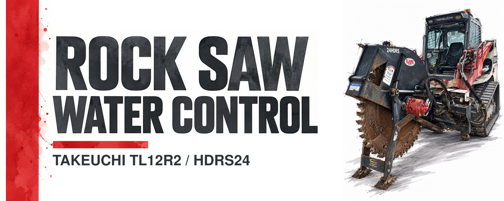
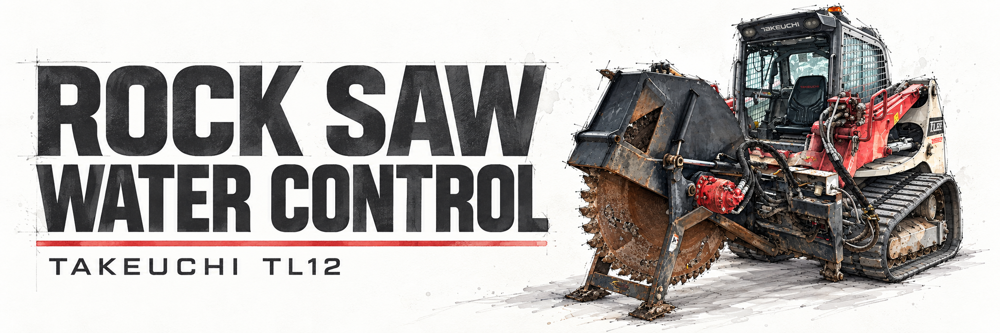
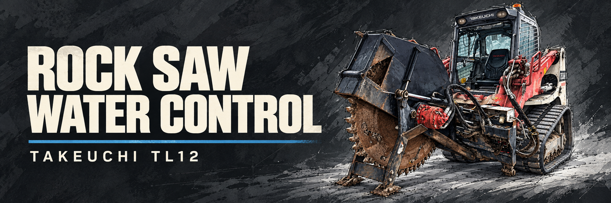
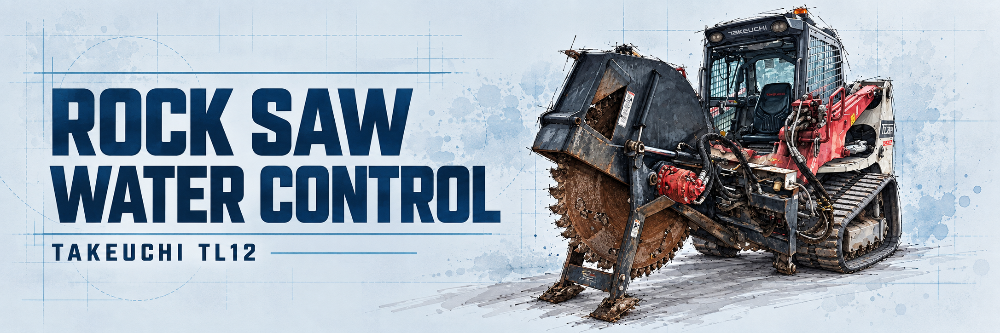
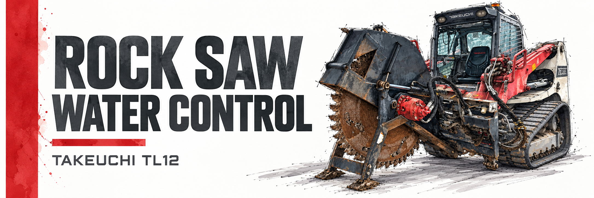

The selected red-stripe banner preserves the original machine artwork. Earlier concepts remain below for reference.
Selected: Red Stripe — Original Artwork
Approved watercolor stripe and title, with original machine artwork pasted at native resolution without generative edits or resampling. Equipment line: TAKEUCHI TL12R2 / HDRS24.

#D93135#242A2F#FFFFFF
Technical White
Superseded AI-assisted concept.

#FAFAF8#242A2F#D93135
Graphite
Superseded AI-assisted concept.

#232A30#F5F0DE#2D83AE
Blueprint
Superseded AI-assisted concept.

#DDEAF1#07365A#5C9ABD
Red Editorial
Superseded AI-assisted concept that established the selected red-stripe direction.

#FFFFFF#242A2F#D93135